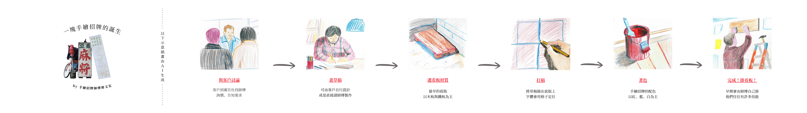

還記得上一次是什麼時候，深深望向台灣街道的面貌嗎？ 招牌，是一種宣稱「我是誰」的符號。 那麽未來10年的我們，還會記得那些寫繪出屬於臺灣城市面貌的雙手嗎？ 近年「台式美學」與「台灣感性」在國內外設計圈與社群平台掀起熱潮，復古字體、手繪招牌、街邊老字號的溫度，成為品牌與文創追逐的靈感來源。然而，就在這股文化熱潮興起的同時，2024年《都市更新條例》修法後的推動進程，臺灣老舊街區的改建腳步加快，許多承載在地記憶的手繪招牌，也隨著一棟棟老屋的拆除而消失。 手繪字不只是街頭的一道風景，它凝聚了老字師的工藝技術與長年勞動的痕跡，如今卻在更新的浪潮中逐漸淡出，地方語言與生活感在被標準化的視覺中逐漸失語。然而，在另一端，仍有新一代設計師試圖以不同形式延續這份感性，透過再設計、字型重製與文化再生的方式，讓手繪字在當代獲得新的生命。在世代交疊下，兩代人如何延續屬於臺灣的「我是誰」？ 我們希望說一場關於「臺灣．字」的故事。 重新思考在「更新」與「保存」之間是否仍有可能並存。 而你知道......一塊手繪招牌是如何被製作出來的嗎？ 誕生  手繪招牌師傅兩大必備技能 書法 招牌上的字體，師傅們會臨摹「商用字彙」等字帖，練習字形結構、筆畫粗細，讓字體更加端正、美觀。台灣常見的手繪招牌字體多以隸書或楷書為主，可說是台灣的代表字型。 素描 早年台灣戲院需要手繪看板，不少師傅除了畫招牌，也畫電影海報，因此就必須掌握精準比例、光影變化與人物輪廓。有些招牌上需加上圖像、插畫，讓整體招牌更具視覺美感。
Chapter 2: Development Chapter 2 Begins New theme, new visuals. Details More scrolling content here. Chapter 2 Finale - Slide 1 Images can be included too. End of Chapter 2
Chapter 3: Climax Centered Content Focus on the center. Chapter 3 Horizontal 1 Chapter 3 Horizontal 2 Chapter 3 Horizontal 3
Chapter 4: Resolution Wrapping Up The final chapter. Final Horizontal Sequence Credits Designed with Bootstrap & JS. The End